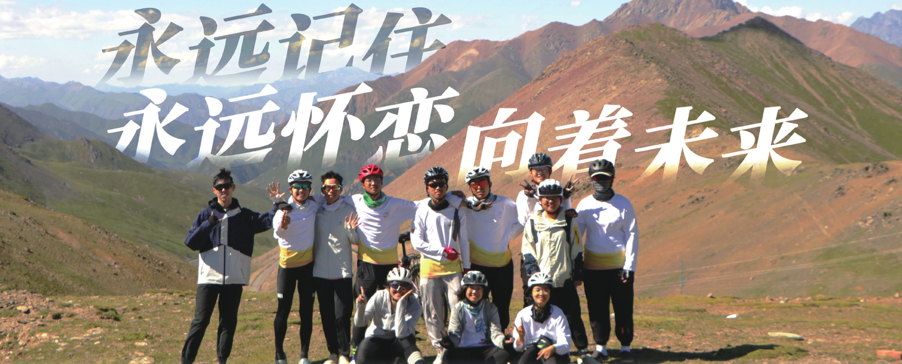
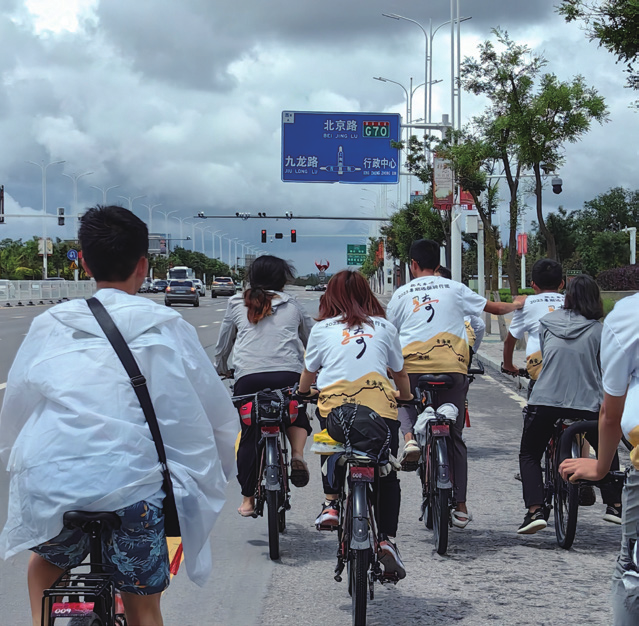
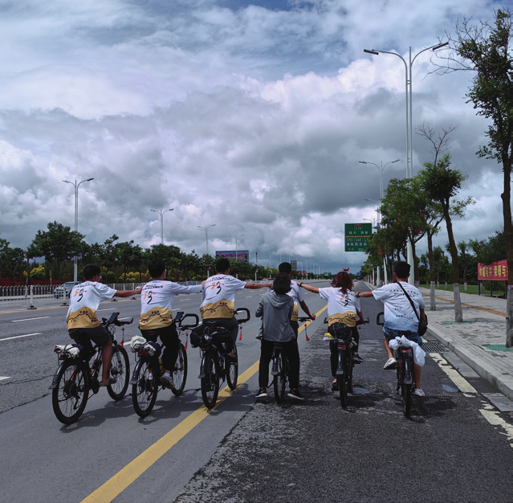

永远记住 永远怀恋 向着未来
原刊48


在二二多次催促之下，我终于建起一个空白的“暑期感想”文档。一个一个字敲下文档名的时候突然很恍惚，“骑行团三姐翠翠”，这个称号让我感到熟悉又陌生，就像暑期也让我觉得熟悉又陌生一样。
现在把记忆倒回到上一个春天，那个群情激奋、人人都想要过春训去暑期的时间，还能回忆起纠结于是否去暑期的心情。非常忐忑、不断反反复复地权衡，到底是按部就班地留下搞科研（虽然不一定有什么成果），还是顶着大四该好好学习的帽子出去痛快玩最后一个还算完整的暑假。然后，就像在自述里写的一样，在妙峰体测放坡的路上，在呼呼的迎面而来的风中，我一下子有了决定。去追求新奇的事情、全新的情感、奇妙的体验，这对我而言是无价的，渴望像火焰一直在心里熊熊燃烧着。所以去暑期，去骑车，哪怕追队也一定要去。


囿于地理位置遥远和学业忙，在出发前和大家见面的次数着实不多。所以真正能见到大家、实际上意味着暑期正式开始的，是从固原火车站出来那一刻。然后是另一个说过很多次的故事：《莅临指导》。故事是很老了，但感受还很鲜明，给孩子冲击很大，见面之前很恐惧和大家见面，担心十天的缺席让我难以融入团里，不知道如何参与进热热闹闹的团众的聊天话题。但是我想，他们应该是猜到我的这点担忧了吧。那些用最热烈的态度、最夸张的喊声、最全情投入的目光的聚集和关注，表达出来的意思也足够明确。在接力的自行车后座上，我完全被兴奋和幸福包围了，和团众一同笑着闹着，看他们展示先进的扒人技术，那点忧虑的小心思悄悄消失得无影无踪。
接下来就是三个星期的骑车生活。我之前从未感觉生活如此纯粹，每天的日程就是踏上自行车、跳下自行车，如此往复。出发之前我觉得暑期主要的内容是风景、团众情和成就感，上路后我才知道对于我这样体力不好的人，每天 99% 的精力全花在骑车本身上。当我弓着腰蹬得呼哧呼哧喘气时，我只能勉强抽出一点精力在周围的崇山峻岭、奇骏景观，或者身边团众的玩笑上。虽然很不想，但我好像必须把大部分心思放在自己身上，状态如何、能否爬完今天的坡，或者给累得要命的自己打气。甚至在最初几天还不适应的时候，也有过非常后悔出来骑车的想法，“在家里舒舒服服躺着不香吗？”。但是哪怕如此，剩下 1% 的时间，在埋头爬坡的喘息期间抬头四顾环绕的群山，在烈日下俯视河流冲刷出的深深沟壑，我还是会被自然诡谲非常的壮美景色所震撼。而和团众，虽然路上的交流通常不多，但一起闷头默默地踩踏也足够给人安全感。身为后旗三矬的一员、矬到后旗小分队的常客，这种陪伴真的能给我深深的支持，让我不至于停在路边嚎啕大哭。更何况，还有出刚察路上和九九放歌狂飙，当前助矬到队伍中间时小弟一路陪骑和聊天（听了很多龚琳娜的歌，好听），小妹虽然不说话但一直笑笑的温暖支持……很多瞬间，如同点点星火，虽然不足够炫目，但也让整个夜空不再黑暗。更别提很多休整日的玩耍、很多很多的特色美食（面食爱好者狂喜），都让暑期的回忆温暖而有趣。


现在回想暑期，还有好多遗憾，很多觉得“现在重来一次会不会做得更好”的瞬间。遗憾每天晚上到住宿点只想瘫着，没有多去其他房间串串门、聊聊天，没有在路上和团众多聊会天，没有深入认识这一群性格各异却都有趣的人；在青海湖边，因为发烧和意外，错过黑马河的篝火和日出，没有进行很多很多的夜聊，没有和二二一起骑过暑期，还在最后一晚像关羽大意失荆州一样丢了手机……但是，“圆满是旅途的墓志铭，正因为缺憾，才有了日后弥补的动因”。一个过于圆满的旅程会让我懒得去回忆、更愿意封存在记忆深处，如同珍宝。这些缺憾让我常常去回味、愿意反思，也让我们在暑期后有了更多聊天的谈资，谁说缺憾不是完整的一部分呢。
也正如一个旅程必然是缺憾的，因而才会未完待续，一个暑期感想也应该是缺憾的，才有日后再提笔的动机。因此，这篇感想先止于此，咱们来日再会（樂）。